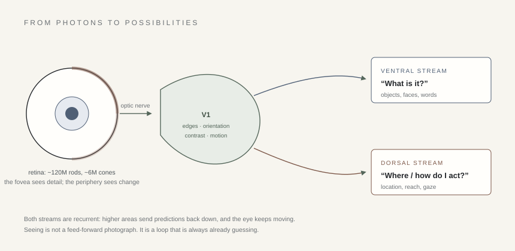
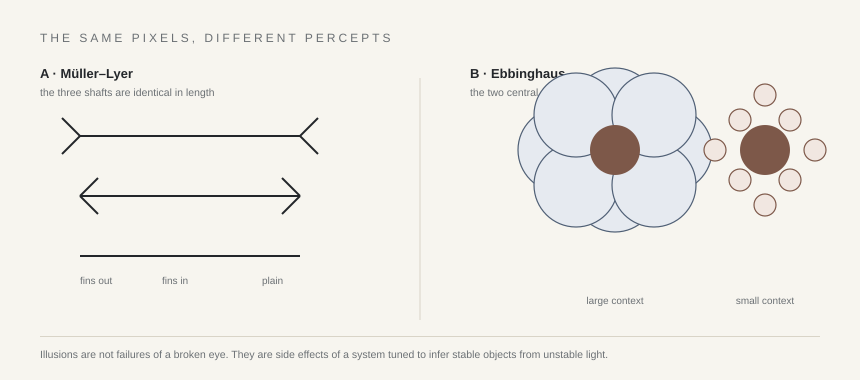

Chapter 03第三章
From Retina to Heuristic从视网膜到启发式
Between the photon and the click sits a machine that guesses. This chapter follows the visual signal from the eye to the cortex, then from perception to judgment—and shows why the same shortcuts that make us fast also make us predictable. 在光子与点击之间，横亘着一台会猜测的机器。本章沿着视觉信号从眼睛走到皮层，再从知觉走到判断，并说明：那些让我们变快的捷径，为什么也让我们变得可被预测。
Seeing is inference. The eye supplies incomplete evidence; the brain supplies a model. Optical illusions are not evidence that the system is broken—they are evidence of what the system is optimized to do. Judgment works the same way: it uses fast, usually useful shortcuts. Interfaces that understand both layers can inform, and can also manipulate. 看见就是推断。眼睛提供不完整的证据，大脑提供模型。视错觉并不是系统坏掉的证据，而是系统被优化去做什么的证据。判断也是如此：它使用快速、通常有用的捷径。理解这两层机制的界面，既能提供信息，也能实施操纵。
The hardware硬件
The human retina contains roughly 120 million rods and 6 million cones. Rods are sensitive to dim light and poor at detail; cones provide color and acuity, and are densely packed in the fovea. The optic nerve leaves the eye through a blind spot that the brain quietly fills in. 人类视网膜大约包含 1.2 亿个视杆细胞和 600 万个视锥细胞。视杆细胞对弱光敏感，但细节能力差；视锥细胞提供颜色与锐度，并密集分布在中央凹。视神经从眼球穿出的地方形成一个盲点，而大脑会悄然把它补上。
The retina is not a passive film. It already computes: lateral inhibition sharpens edges, and center-surround receptive fields make the visual system sensitive to contrast rather than absolute brightness. This is why a gray patch can look darker next to white and lighter next to black. Vision begins with filtering, not recording. 视网膜不是被动的胶片。它已经在计算：侧抑制锐化边缘，中心—外周感受野让视觉系统对对比度而非绝对亮度敏感。这就是为什么同一块灰色，放在白色旁边显得更深，放在黑色旁边显得更浅。视觉始于过滤，而不是记录。
The pathways通路
Signals travel from the retina through the optic nerve to the lateral geniculate nucleus, and then to the primary visual cortex, V1. Hubel and Wiesel's recordings in the 1960s showed that V1 neurons respond to oriented edges and boundaries. The cortex does not see pixels; it sees structure. 信号从视网膜出发，经视神经到达外侧膝状体，再进入初级视皮层 V1。20 世纪 60 年代，Hubel 与 Wiesel 的记录显示，V1 神经元对特定朝向的边缘与边界作出反应。皮层看到的不是像素，而是结构。
Beyond V1, processing splits into two broad streams. The ventral stream, running toward the temporal lobe, is often summarized as the “what” pathway: objects, faces, words. The dorsal stream, running toward the parietal lobe, is the “where and how” pathway: location, motion, and the guidance of action. 在 V1 之后，加工大致分为两条通路。腹侧通路伸向颞叶，常被概括为“是什么”通路：物体、面孔、文字。背侧通路伸向顶叶，是“在哪里、如何行动”通路：位置、运动，以及动作的引导。
The split is a useful simplification, not a complete anatomy. What matters for design is that recognition and action are separable. A user can recognize a button and still fail to reach it—because the target is too small, too far, or in the wrong place for the hand. 这种划分是有用的简化，而非完整的解剖学。对设计而言，重要的是：识别与行动可以分离。用户可以认出按钮，却仍然点不到它——因为目标太小、太远，或者不在手能够到的地方。

Perception as inference知觉即推断
Hermann von Helmholtz described perception as “unconscious inference”: the brain uses past experience to infer the most likely cause of the current sensory input. Modern predictive-processing accounts formalize this as a loop in which higher areas send predictions downward and lower areas send errors upward (Rao & Ballard, 1999). 赫尔曼·冯·亥姆霍兹把知觉描述为“无意识推断”：大脑利用过去经验，推断当前感觉输入最可能的原因。现代预测加工理论把它形式化为一个回路：高层向下发送预测，低层向上发送误差（Rao & Ballard, 1999）。
On this account, illusions are not bugs. They are the signature of a system that relies on assumptions. The Müller–Lyer illusion exploits assumptions about corners and depth. The Ebbinghaus illusion exploits relative size. The checker-shadow illusion exploits the assumption that shadows darken surfaces. Each one is a case where a generally good prior meets an unusual image. 在这个解释下，错觉不是缺陷，而是一个依赖假设的系统的签名。缪勒—莱尔错觉利用了关于转角与深度的假设；艾宾浩斯错觉利用了相对大小；棋盘阴影错觉利用了“阴影会使表面变暗”的假设。每一个例子，都是“通常好用的先验”遇上了“不寻常的图像”。
Culture matters here. Segall, Campbell, and Herskovits (1966) found that susceptibility to some geometric illusions varies across populations with different visual environments. The lesson is not that perception is arbitrary. It is that even the “basic” layer is tuned by experience. 文化在这里很重要。Segall、Campbell 与 Herskovits（1966）发现，对一些几何错觉的易感程度会随人群所处的视觉环境而变化。这并不意味着知觉是任意的，而是说：即便是“最基础”的层面，也被经验所调节。

From percept to judgment从知觉到判断
Daniel Kahneman's distinction between “System 1” and “System 2” is a useful shorthand, not a precise brain map. System 1 is fast, automatic, associative, and always on. System 2 is slow, effortful, and easily tired. Most browsing is System 1 work. 丹尼尔·卡尼曼对“系统 1”与“系统 2”的区分是一种有用的速记，而不是精确的大脑地图。系统 1 快速、自动、联想式，并且始终在线。系统 2 缓慢、费力，而且容易疲劳。大多数浏览行为都是系统 1 的工作。
The heuristics identified by Tversky and Kahneman (1974) are the judgment equivalents of perceptual priors. Anchoring makes the first number disproportionate. Availability makes vivid examples feel frequent. Representativeness makes a good story feel like a base rate. Framing makes “90% survival” feel different from “10% mortality.” Tversky 与 Kahneman（1974）提出的启发式，是判断层面的“知觉先验”。锚定让第一个数字获得不成比例的权重；可得性让生动的例子显得更常见；代表性让一个好故事感觉像基础概率；框架让“90% 存活率”与“10% 死亡率”感觉不同。
Interfaces are full of these levers. A struck-through price anchors the current one. A pre-selected option exploits the default bias. A row of testimonials supplies social proof. A countdown supplies scarcity. None of these is inherently dishonest; each becomes dishonest when it is fabricated or when it is used to override a user's stated goal. 界面中充满了这些杠杆。被划掉的原价锚定了现价；预选项利用了默认偏差；一排用户评价提供了社会证明；倒计时制造了稀缺感。这些手段本身并不必然不诚实；当它们是伪造的，或被用来覆盖用户明确表达的目标时，才变得不诚实。
The seam between perception and persuasion知觉与说服之间的接缝
The two layers compound. A clean layout makes a claim easier to process, and easy processing is often misread as truth. This is related to the aesthetic–usability effect: attractive interfaces are judged more usable, and attractive claims are judged more credible, even when the underlying content is unchanged. 两层机制会叠加。干净的版式让一个主张更容易加工，而“容易加工”常被误读为“真实”。这与审美—可用性效应有关：好看的界面会被判断为更好用，好看的主张会被判断为更可信，即便底层内容并未改变。
This is the ethical seam. Visual design can amplify a true signal or disguise a weak one. The difference is not a matter of taste; it is a matter of whether the perceptual shortcut is aligned with the user's interest or merely with the metric. 这就是伦理的接缝。视觉设计可以放大真实信号，也可以伪装虚弱信号。区别不在于品味，而在于：这条知觉捷径是与用户利益一致，还是只与指标一致。
The Müller–Lyer illusion has been replicated for more than a century, but its size varies with culture, age, and viewing conditions—so it is better treated as a family of effects than a single fixed error. The checker-shadow illusion (Adelson, 1995) is robust and demonstrates color constancy under illumination assumptions. Heuristics such as anchoring are among the most replicated findings in social psychology, though effect sizes in any one setting can be modest. Use them to predict direction, not to promise magnitude. 缪勒—莱尔错觉已被重复验证了一个多世纪，但其效应大小会随文化、年龄和观看条件变化——因此更应把它视为一族效应，而不是单一固定的错误。棋盘阴影错觉（Adelson, 1995）稳健地展示了照明假设下的颜色恒常性。锚定等启发式是社会心理学中被重复最多的发现之一，但任何单一情境中的效应量都可能不大。用它们预测方向，而不要承诺幅度。
Open a checkout or subscription page. Label each element as either perceptual (contrast, grouping, motion, color) or cognitive (default, anchor, scarcity, social proof). Then ask which labels would survive if the business metric changed. The ones that would disappear were doing persuasive work, not informational work. 打开一个结账页或订阅页。把每个元素标注为知觉性（对比、分组、运动、颜色）或认知性（默认、锚定、稀缺、社会证明）。然后问：如果商业指标改变，哪些标注会消失？会消失的那些，做的是说服工作，而不是信息工作。
- Vision is inference built on incomplete evidence.视觉是在不完整证据之上进行的推断。
- Illusions reveal the assumptions that normally help us.错觉揭示了那些通常帮助我们的假设。
- Perception and judgment share the same shortcut logic.知觉与判断共享同一套捷径逻辑。
- Visual credibility is not evidence; polish can hide a weak claim.视觉上的可信感不是证据；精致可以掩盖虚弱的主张。
- Helmholtz, H. von (1867). Handbuch der physiologischen Optik. Voss.
- Hubel, D. H., & Wiesel, T. N. (1962). Receptive fields, binocular interaction and functional architecture in the cat's visual cortex. Journal of Physiology, 160(1), 106–154.
- Müller-Lyer, F. C. (1889). Optische Urteilstäuschungen. Archiv für Physiologie, 263–270.
- Adelson, E. H. (1995). Checker shadow illusion. MIT.
- Rao, R. P. N., & Ballard, D. H. (1999). Predictive coding in the visual cortex. Nature Neuroscience, 2(1), 79–87.
- Tversky, A., & Kahneman, D. (1974). Judgment under uncertainty: Heuristics and biases. Science, 185(4157), 1124–1131.
- Segall, M. H., Campbell, D. T., & Herskovits, M. J. (1966). The Influence of Culture on Visual Perception. Bobbs-Merrill.